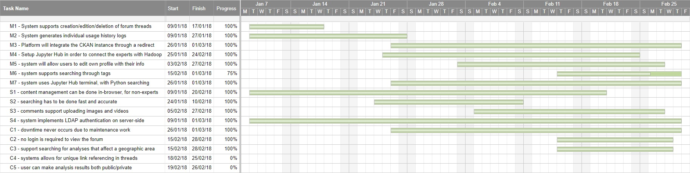

General Requirements
The goal of our project is to develop a web platform that allows users to analyse geodata and discuss/reference that geodata on the very same platform. The platform:
- Brings together existing features into a single platform (namely the forum and the Jupyter Engine)
- Encourages interaction between them through supporting searching for posts regarding past analyses via tags
- Has a look-and-feel based on the NoI website design, as requested by the UDL.
The main users of our application can be categorized as follows:
- Geodata analysts (e.g. urban planning professionals) who want to analyse data, and discuss said analyses within the forums with other analysts.
- University researchers and professors, such as those we’ve interacted with from the Urban Dynamics Lab, who are analysing data for academic purposes.
- Students learning how to use the Jupyter Analysis Engine in a geodata context (e.g. some Physics students make consistent use of this)
- The general population, for a multitude of reasons e.g. personal interest, one-off usage for work purposes, and so on.
MOSCOW Analysis
Analysis / Brief Discussion of our Gantt Chart
As per the Gantt Chart, the bulk of our progress was made in February, with our internal and client deadline being the 2nd of March. This was due to a number of reasons:
Initially, our clients had requested that we use Drupal 8 - the latest version - so the system would naturally be the latest one possible. However, for many of the features and goals we had and wanted to implement, this was problematic, as Drupal 8 is fairly new, and there is not a large support-base available compared to Drupal 7 - which has been around for about 5 years (though not as new!), but is not different to Drupal 8 (apart from lacking some of the core modules). Ended up doing hard-coding of themes in Drupal 8, which then did not work out as we had to transfer down to Drupal 7.
Additionally, we experienced ongoing problems with configuring LDAP, and this lasted the duration of the project until we finally managed to configure it properly.
The bulk of our requirements were fulfilled, including all Must Have (ID: M1 - M7) and Should Have requirements (ID: S1 - S4), and 3/5 of our Could Have requirements (ID: C1 - C3)
Use Cases
Find below the use cases for the main actions that site users can take (both normal users, and administrators)
| Use Case | Expert Facility - Data Analysis |
|---|---|
| ID | UC1 |
| Brief Description | User chooses between CKAN and Jupyter Hub for analysis, then analyses data. |
| Primary Actors | User |
| Secondary Actors | System |
| Preconditions | None |
| Main Flow |
|
| Postconditions | System has results of analysis ready, for user to consume |
| Alternative Flows | User chooses between either CKAN or Jupyter, which influences their interaction with the analysis engine. All other factors are kept constant. |
| Use Case | Analysing Data with Jupyter Hub |
|---|---|
| ID | UC2 |
| Brief Description | User uploads or chooses data, then interacts with Jupyter Hub using Python to analyse data |
| Primary Actors | User |
| Secondary Actors | System (Jupiter Hub) |
| Preconditions | User has accessed Jupyter Hub, but not from the Expert Facility (which provides an option between CKAN and Jupyter) |
| Main Flow |
|
| Postconditions | none |
| Alternative Flows | none |
| Use Case | Signing up, Logging In/Out of Website |
|---|---|
| ID | UC3 |
| Brief Description | User enters details to create account and sign up, then logs in, uses the website for an arbitrary amount of time, then logs out |
| Primary Actors | User |
| Secondary Actors | System |
| Preconditions | User hasn’t created an account before OR User hasn’t logged in |
| Main Flow |
|
| Postconditions | User is now logged out of the system |
| Alternative Flows | none |
| Use Case | Editing User Profile |
|---|---|
| ID | UC4 |
| Brief Description | User changes one or more details about their profile (image, bio, name, expertise level, and so on) |
| Primary Actors | User |
| Secondary Actors | System |
| Preconditions | User is logged in |
| Main Flow |
|
| Postconditions | User now has a changed profile |
| Alternative Flows | none |
| Use Case | Interacting with Threads (Posting, Editing, Deleting, Responding) |
|---|---|
| ID | UC5 |
| Brief Description | User chooses to interact with a thread (creating, editing, responding to, or deleting a thread) |
| Primary Actors | User |
| Secondary Actors | System |
| Preconditions | User is logged in |
| Main Flow | User is logged in
|
| Postconditions | User’s choice now results in a changed (or removed) thread |
| Alternative Flows | none |
| Use Case | Content Management as Administrator |
|---|---|
| ID | UC6 |
| Brief Description | Admin wishes to add/change/remove content from the site (thread, filler text, images, theming etc) |
| Primary Actors | Administrator |
| Secondary Actors | System |
| Preconditions | Administrator is logged in |
| Main Flow |
|
| Postconditions | none |
| Alternative Flows | none |
| Use Case | Administrator testing the website |
|---|---|
| ID | UC7 |
| Brief Description | Administrator wishes to test the modules configured for the Drupal website, specifically via Unit Testing |
| Primary Actors | Administrator |
| Secondary Actors | System |
| Preconditions | Administrator is logged in |
| Main Flow |
|
| Postconditions | none |
| Alternative Flows | none |